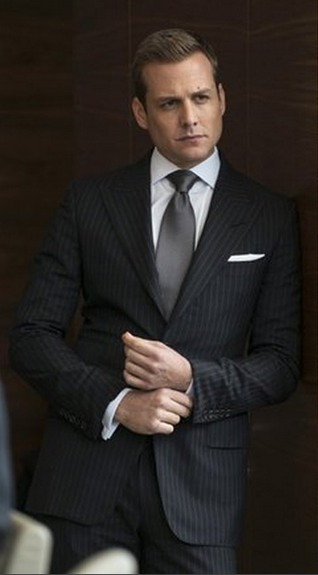

This is where you'll learn more about what matches and what doesnt. When we consider style plear go back and refernce the Why Do you need to Look Good page. This will give you statistics on why you actually need to look good. This page allows you to see what you need to match up and different ideas to help you achieve this level of style.
First look at this picture!  This photo is of a man who looks good and knows how to style himself. His name in the show he plays is called Harvey Specter. He's witty and knows how to impress people.
If you ever run into a situation where you think it might be okay to wear something, just look at this photo, would he wear that? Probably not.
Some of the most important tips I can give you is that you must first have a color compination. We must have light with dark, any combination normally works. If you have black trousers and a black shirt, you did something wrong. If your shoes match your trousers, once again you did something wrong. Look at this photo for instance. His shoes do not match his suit. His shirt does not match his suit color. So many times we see this and it does not look good. If you want to be a sharp dresser you need to be able to distiguish between what looks good and what doesn't. (Bonus: if you have cufflinks it normally sharpens up the outfit.)
More to follow. But next week we will get into socks. Here's a good website to look at: Shirt and Trouser combanations.